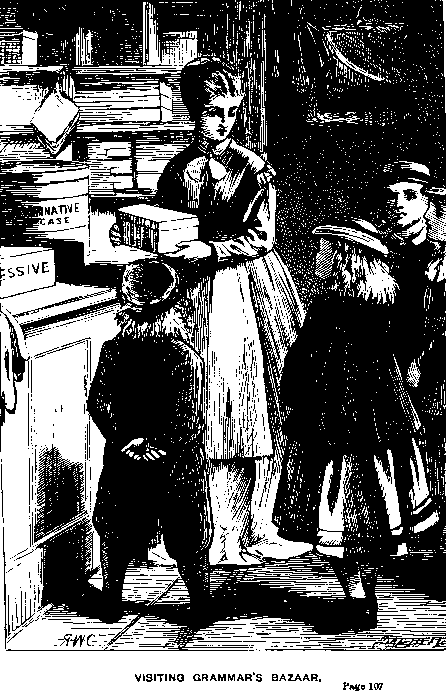

I CANNOT undertake to describe all the expeditions to Education, nor the various purchases made by the children; but I will here mention the first visit made by the Desleys to Grammar's famous bazaar, a place much frequented by all those who dwell in the town.
I need hardly tell my readers that Grammar's Bazaar lies in quite an opposite direction from Mrs. Amusement's, and that the two concerns have no connection whatever with each other. There are no sweetmeats sold in the former; the goods are all called words, and are arranged in perfect order on nine stalls, kept by nine sisters, well known by the name of Parts of Speech. These sisters live and work together in the greatest harmony and comfort, and are highly respected by all the inhabitants of the town of Education. Some indeed call them "slow" and "tiresome," and Miss Folly has been heard to declare that the very mention of them gives her the fidgets; but neither you nor I, dear reader, form our opinions by those of Miss Folly.
It was on a fine morning in summer that Dick, Lubin, Matty, and Nelly paid their first visit to Grammar's Bazaar. They entered it by a low porch, half choked up with parcels of words tied up in sentences ready to be sent to various customers.
"A dull, dark place this is!" exclaimed Lubin; I would not give Amusement's Bazaar for fifty like this."
"Any chance of having one's pocket picked here?" said Dick, with a malicious wink at his brother.
"Let's visit all the stalls one after another," cried Matty, "before we make any purchase; I like to see all that's to be seen. What a comical little body is standing behind the first counter; she is not as big as Alphabet, I should say."
"She looks like his sister," observed Nelly; "but I suppose that she is one of the Parts of Speech." And she read the name "Article" fastened up at the back of the stall.
"What may you sell here, my little lady?" asked Dick, in his easy, self-confident way; "I see only three hooks on your counter."
Miss Article Part of Speech had to stand upon a stool that her head might peep over the top of her stall. "I'm but a little creature," said she, with a good-humoured smile; "a, an, and the are all the words that I'm trusted to sell. If you want to see a larger assortment, pass on to my sister Noun; she has many thousands of words to show you, models of everything that can be seen, heard, or felt in the world."
Surely enough a most prodigious collection appeared on the counter of Noun, a large portly maiden who presided over the stall next to that of Article. There were cups, and saucers, pins and needles, caps and bonnets, models of houses, churches, beasts, birds, and fishes, by far too numerous to describe.
"These are all common," observed Noun, seeing the eyes of Dick fixed admiringly upon the collection ; "I have behind me some more curious things that have all names of their own," and she pointed to a row of small figures. "These are not common but proper," she continued; "you will notice here Wellington, Napoleon, Nelson, and our gracious sovereign Victoria."
"And oh, look here, at Miss Adjective's counter!" cried Matty; "she keeps such a lot of dolls' things to dress up the figures of Noun. A pretty, nice, curious cape--"
"An absurd, ridiculous, preposterous cap," added Dick.
"Observe," said Adjective with a courteous air, that I arrange my words in three rows, one above another, which I call degrees of comparison—positive, comparative, superlative."
"I see, I see," exclaimed Dick; "here's a bonnet, frightful—that's positive; another more frightful—that's comparative; and this with the superlative yellow tuft, I should call the most frightful of all. So, Nelly's clever—that's positive—"
"I don't think so," murmured Nelly.
"Matty's cleverer—that's comparative."
Matty laughed.
"And I am superlatively clever—without doubt the cleverest of all!"
"In your own opinion," growled Lubin.
Nelly wandered on to the next stall, which was kept by the maiden Pronoun. Though smaller in size, she was so much like her sister Noun as to be frequently taken for her. As it was a trouble to stout Noun to go far or move fast, she very often sent Pronoun upon various errands in her stead. Pronoun sold not many words; such as she had were mere pictures of such as were kept by her sister. I, thou, he, she, and it, and some others which we need not stop to enumerate.
"Here's a famous big stall!" exclaimed Dick, stopping in front of Verb's, which was a very remarkable one, being covered with clock-work figures all in motion. One could see by them what it is to plough, to sow, to reap, to work, to weep, and to dance. The counter of Verb was almost as extensive as that of her sister Noun.
"How do you make all these things move?" said Dick with some curiosity to Verb.
"I conjugate them; that is, wind them up," she replied, showing a small brass key.
"Is it easy to conjugate them?" asked the boy.
"Easy enough with the regular words," replied Verb, "but a good many of mine are quite irregular in their construction, and it is hard to conjugate them."
"And if one conjugate them carelessly, I suppose," said Dick, "that there would be a great crack or whiz, and the whole affair would go to smash."
"Oh, don't stop there asking such questions!" cried Lubin; "I'm heartily tired of this stupid bazaar—and if you go on so slowly, we shall never get to the end!"
"I like to understand things," said Dick there's a great deal to attract one's attention in this curious counter of Verb."
"Adverb, who keeps the next one," observed Nelly, "sells stands for her sister Verb's figures, to display them nicely, prettily, safely!"
"Badly, crookedly, awkwardly!" cried Dick, who was in one of his funny moods. " I don't like the look of Adverb, I think that she's given to lies!"
"The three sisters who have the last stall," whispered Matty to Dick, "seem all but poor little creatures!"
"I should call them small, smaller, and smallest, like the three degrees of comparison," laughed Dick, "but I see their names at the backs of their counters,--Preposition, Conjunction, Interjection."
"Pray, Miss Preposition, what are these?" asked Nelly, as she took up some small labels from that lady's stall, with from, by, of, and such names upon them.
"They are to show in what case Noun's words are to be packed," replied Preposition politely, "You may remark yonder boxes with Nominative, Possessive, and such names painted upon them; it is my business to label my sister's goods, that they may be packed according to rule."
"It must be stupid work to deal in nothing but tickets!" exclaimed Dick; "if I were a Part of Speech, I'd be Noun rather than Preposition! And what has Conjunction to sell?"
"Only little balls of string to tie bundles of words together, such as and, either, or; and scissors to divide the bundles, such as neither, nor, notwithstanding."
"Oh, come here, come here!" cried Matty eagerly; there's nothing amusing to look at on the counters of Conjunction or Preposition, but Interjection has something very funny! Look at these gutta-percha balls shaped like faces, some showing pleasure—some horror—some surprise; just give them a little squeeze, and hear how you make them squeak!"
Lubin pressed one of the heads between his fat fingers, and oh! ah! squeaked the red lips.
"I'll try one!" cried Dick, catching up another; "it's so like Matty's friend, Miss Folly, that I'm sure that she sat for her likeness!" He thumped it down on the counter, and out came a shrill "lack-a-day!"
"I think," laughed Nelly, "that Interjection sells the funniest words of all!"
"And the ones that we could best do without," said Dick scornfully, throwing down the lack-a-day ball.
The children did not leave the Grammar Bazaar empty-handed. I must just remark that Matty loaded herself most with words from the stall of Adjective, choosing most of them from the Superlative row; and that Lubin, notwithstanding. the neat labels of Miss Preposition, never knew how to put one of the words which he got from Noun or Pronoun into its own proper case.
